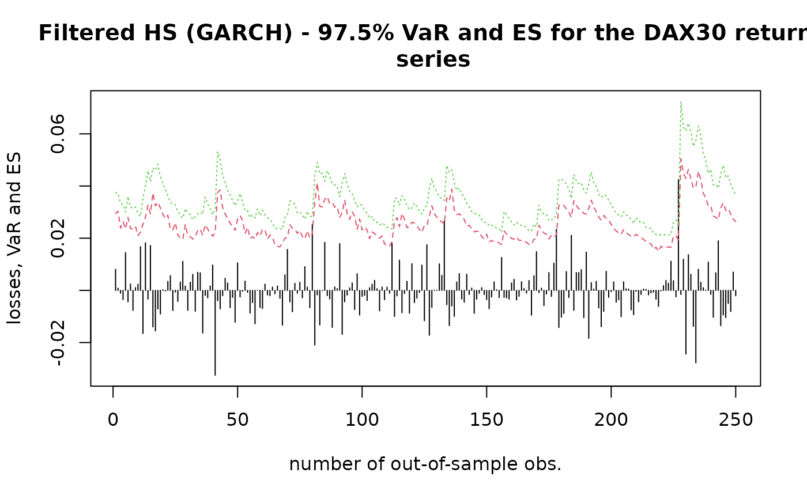

rollcast.RdComputes rolling one-step ahead forecasts of Value at Risk and Expected Shortfall (Conditional Value at Risk) by means of plain historical simulation age- and volatility-weighted historical simulation as well as filtered historical simulation.
a numeric vector of asset returns
confidence level for VaR calculation; default is 0.975
model for estimating conditional volatility; options are 'EWMA'
and 'GARCH'; if model = 'GARCH', additional arguments can be adjusted
via ...; default is 'EWMA'
method to be used for calculation; default is 'plain'
decay factor for the calculation of weights; default is 0.98
for method = 'age' and 0.94 for method = 'vwhs' or
method = 'fhs'
number of out-of-sample observations; most recent observations are used;
default is NULL
window size for rolling one-step forecasting; most recent observations
before out-of-sample are used; default is NULL
size of bootstrap sample; must be a single non-NA integer value
with nboot > 0; default is NULL
a character object; defines the smoothing approach
for the unconditional variance from the logarithm of the squared centralized
returns; for smoothscale = 'lpr', the unconditional
variance is smoothed via the smoots::gsmooth() function from the
smoots package; the bandwidth has to be chosen manually; otherwise the
default is used; if smoothscale = 'auto', the function smoots::msmooth()
is employed and the bandwidth is chosen automatically (data-driven); see the
documentation of the smoots package for more information; is set to
smoothscale = 'none' by default
additional arguments of smoots::gsmooth() and
smoots::msmooth(); see the documentation of the smoots
package for more information; is set to customized default settings
additional arguments of the ugarchspec function from the
rugarch-package; only applied if model = 'GARCH'; default
settings for the arguments variance.model and mean.model are:
variance.model = list(model = 'sGARCH', garchOrder = c(1, 1))mean.model = list(armaOrder = c(0, 0))Returns a list with the following elements:
Numerical vector containing out-of-sample forecasts of Value at Risk
Numerical vector containing out-of-sample forecasts of Expected Shortfall (Conditional Value at Risk)
Numerical vector containing out-of-sample returns
Confidence level for VaR calculation
Model for estimating conditional volatility
Method to be used for calculation
Number of out-of-sample observations
Window size for rolling one-step forecasting
Size of bootstrap sample
prices <- DAX$price.close
returns <- diff(log(prices))
n <- length(returns)
nout <- 250 # number of obs. for out-of-sample forecasting
nwin <- 500 # window size for rolling forecasts
### Example 1 - plain historical simulation
results1 <- rollcast(x = returns, p = 0.975, method = 'plain', nout = nout,
nwin = nwin)
#>
#> Calculations completed.
matplot(1:nout, cbind(-results1$xout, results1$VaR, results1$ES),
type = 'hll',
xlab = 'number of out-of-sample obs.', ylab = 'losses, VaR and ES',
main = 'Plain HS - 97.5% VaR and ES for the DAX30 return series')
### Example 2 - age weighted historical simulation
results2 <- rollcast(x = returns, p = 0.975, method = 'age', nout = nout,
nwin = nwin)
#>
#> Calculations completed.
matplot(1:nout, cbind(-results2$xout, results2$VaR, results2$ES),
type = 'hll',
xlab = 'number of out-of-sample obs.', ylab = 'losses, VaR and ES',
main = 'Age weighted HS - 97.5% VaR and ES for the DAX30 return series')
### Example 3 - volatility weighted historical simulation - EWMA
results3 <- rollcast(x = returns, p = 0.975, model = 'EWMA',
method = 'vwhs', nout = nout, nwin = nwin)
#>
#> Calculations completed.
matplot(1:nout, cbind(-results3$xout, results3$VaR, results3$ES),
type = 'hll',
xlab = 'number of out-of-sample obs.', ylab = 'losses, VaR and ES',
main = 'Vol. weighted HS (EWMA) - 97.5% VaR and ES for the DAX30 return
series')
# \donttest{
### Example 4 - volatility weighted historical simulation - GARCH
results4 <- rollcast(x = returns, p = 0.975, model = 'GARCH',
method = 'vwhs', nout = nout, nwin = nwin)
#>
#> Calculations completed.
matplot(1:nout, cbind(-results4$xout, results4$VaR, results4$ES),
type = 'hll',
xlab = 'number of out-of-sample obs.', ylab = 'losses, VaR and ES',
main = 'Vol. weighted HS (GARCH) - 97.5% VaR and ES for the DAX30 return
series')
# }
### Example 5 - filtered historical simulation - EWMA
results5 <- rollcast(x = returns, p = 0.975, model = 'EWMA',
method = 'fhs', nout = nout, nwin = nwin, nboot = 10000)
#>
#> Calculations completed.
matplot(1:nout, cbind(-results5$xout, results5$VaR, results5$ES),
type = 'hll',
xlab = 'number of out-of-sample obs.', ylab = 'losses, VaR and ES',
main = 'Filtered HS (EWMA) - 97.5% VaR and ES for the DAX30 return
series')
# \donttest{
### Example 6 - filtered historical simulation - GARCH
results6 <- rollcast(x = returns, p = 0.975, model = 'GARCH',
method = 'fhs', nout = nout, nwin = nwin, nboot = 10000)
#>
#> Calculations completed.
matplot(1:nout, cbind(-results6$xout, results6$VaR, results6$ES),
type = 'hll',
xlab = 'number of out-of-sample obs.', ylab = 'losses, VaR and ES',
main = 'Filtered HS (GARCH) - 97.5% VaR and ES for the DAX30 return
series')

# }